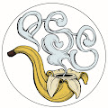 Primate Social Society Official 灵长类社会协会（PSS）是一个复杂的猿化身 NFT 集合，灵感来自我们在 DeFi 中堕落的兄弟姐妹。我们美丽的 Ape Queen Knifebebe 手绘了数百层（每层 2-4 小时），这些层通过算
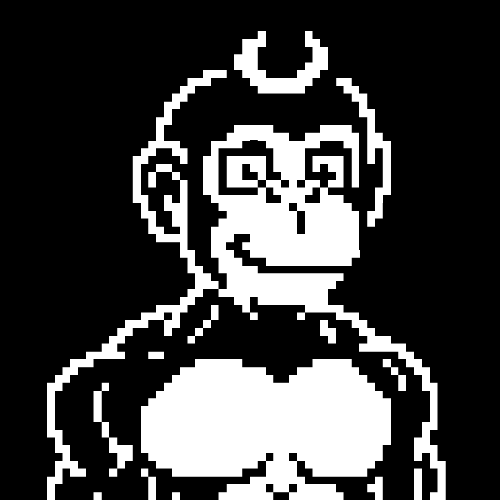 Prime Ape Moon Club 7777 只猩猩，3000 颗免费薄荷糖 月球是通往星星之路的第一个里程碑 最传奇的物品之一是隐藏在下一个要铸造的物品中。 公开铸币价格 - 0.005 ETH 快速公告： 我们
Prime Ape Planet PAP 我们的猿 之前有很多类人猿，但大多数只是黑猩猩，在元宇宙中没有任何真正的形式或功能。Primus Ethereum 哺乳动物 Prime Apes 是不同的。 类人猿具有自适应能力，
Prime Kong Planet by PAP Prime Kong 星球（PKP）是 9.797 个 Kong NFT 的独特集合，它们共同存在于以太坊区块链上。每个 Prime Kong NFT 都是由 Kurtis Dawe 手绘的。Kurtis 是一位知名艺术家，曾参与漫威、
Private Jet Pyjama Party First Ladies Private Jet Pajama Party First Ladies NFT 在过去 7 天内售出 6 次。私人飞机睡衣派对第一夫人的总销售额为 3.24 万美元。一件私人飞机睡衣派对第一夫人 NFT 的平均价格为 539.7 美元。私人飞机
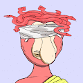 Proboscis Monkey Club 长鼻猴俱乐部统计 创建于 7 个月前 230 代币供应 10% 费用 过去 7 天没有出售 Proboscis Monkey Club。 长鼻猴手工收藏，独特的nfts，40%的利润将捐赠给长鼻圈养，如
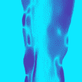 processed (art): mirage ▶ 什么是加工（艺术）：海市蜃楼？ 已处理（艺术）：海市蜃楼是一个 NFT（不可替代代币）集合。存储在区块链上的数字艺术品集合。 ▶ 有多少已处理（艺
Professor Elon Rocket Factory Elon Rocket Factory 教授是以太坊 (ERC-721) 区块链上 9,999 个独特 NFT 的集合。每一件都是独一无二的，由 Elon 教授亲自精心设计和挑选。他是世界上最全能的人，无所不知。未来的麦哲伦
Project Atama Genesis 333 非常规生物。排他性、声望和坚持。Atama 的使命是为动漫 PFP 狂热者提供新的和改进的体验。我们相信从紧密结合和正确开始。一个充满激情的项目。 阿
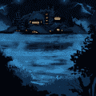 Project Godjira Gen 2 3333 GEN2 GODJIRA 提供 2 级会员资格 独家生成 $JIRA 代币 访问 NFT 领域的最佳 ALPHA 333 GENESIS GODJIRA 提供独家 1 级会员资格 拥有您所有 PROJECT GODJIRA 资产的所有商业权利 投票确定项目的战略方向 PROJECT GODJIRA 委
Project Kurayami 仓见计划统计 创建于 5 个月前 764代币供应 7% 费用 过去 7 天没有售出 Project Kuryami。 Kuryami 是一个受日本启发的系列，旨在向我们的社区介绍日本文化 居住在
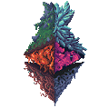 Project MetaStonez MetaStonez 是从地球升起的基于像素的生物。我们的存在是为了扩展 Stoneverse，让 NFT 收藏家、艺术家和开发者有机会参与这一旅程。 MetaStonez 是在以太坊区块链上
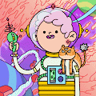 Project Spoon DAO 代币发行 如果您要进入太空，则必须使用宇宙货币！ 该代币将作为 SPOON DAO 的治理代币，用于 SPOON 项目的生态系统中。 如何在太空中生存？ 获得你自己的 Spoon DAO！ 来
Project T Genesis Project T Genesis NFT - 常见问题（FAQ） ▶ 什么是 Project T Genesis？ Project T Genesis 是一个 NFT（不可替代代币）集合。存储在区块链上的数字艺术品集合。 ▶ 有多少 Project T
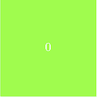 ProjectLevelUp 项目 LevelUp 铸造了一个具有基本背景的零水平。 您可以使用 12 种不同的背景颜色升级多达 1024 个级别。 每次达到新的以 2 为底的指数级别时，背景颜色都会发生变化。
Proof of CNCPTS CNCPTS NFT 证明 - 常见问题 (FAQ) ▶ 什么是 CNCPTS 证明？ CNCPTS 的证明是一个 NFT（不可替代令牌）集合。存储在区块链上的数字艺术品集合。 ▶ 存在多少个 CNCPTS 代币证明？ 总共有
PROOF OF {ART}WORK 交互式、基于软件的艺术和最早偏离简单图像和视频格式的 NFT 集合之一。 {艺术证明}作品是由一个简单等式得出的数学实体：z_n -> {z_n}^2 + z_0 这些 NFT 不是图像
Property's NFT Property’s 是一款以元宇宙为重点的收集纸牌游戏。 我们的 NFT 系列展示了文化多样性以及历史和现代建筑的优雅。 我们正在构建虚拟世界的社交网络。 我们是所有你最喜
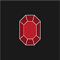 Provably Rare Gem Provably Rare Gem 是一种无需许可的链上资产，可供铁杆收藏家挖掘和收藏。 必须使用链下工作证明来开采宝石。 宝石稀有度越高，越难被发现。 故意省略统计信息和其他
Psychedelics Anonymous Component 1 Psychedelics 匿名组件 1 NFT - 常见问题（FAQ） ▶ 什么是迷幻匿名组件 1？ Psychedelics Anonymous Component 1 是一个 NFT（不可替代代币）集合。存储在区块链上的数字艺术品集合。 ▶ 存在多
Psychedelics Anonymous Component 2 Psychedelics 匿名组件 3 NFT - 常见问题（FAQ） ▶ 什么是迷幻匿名组件 3？ Psychedelics Anonymous Component 3 是一个 NFT（Non-fungible token）集合。存储在区块链上的数
Psychedelics Anonymous Component 3 Psychedelics 匿名组件 3 NFT - 常见问题（FAQ） ▶ 什么是迷幻匿名组件 3？ Psychedelics Anonymous Component 3 是一个 NFT（Non-fungible token）集合。存储在区块链上的数
Psychedelics Anonymous Genesis 注意：由于我们的质押机制，唯一持有者计数不准确。真正的唯一持有人数量约为 5,500 - 6,000 名持有人。 GENESIS PFP NFT 授予最高级别的 PsyCHEDELICS 匿名会员资格。 它包括独家访问：
Psychedelics Anonymous Printing Press Psychedelics 匿名印刷机 NFT - 常见问题 (FAQ) ▶ 什么是迷幻匿名印刷机？ Psychedelics Anonymous Printing Press 是一个 NFT（不可替代令牌）集合。存储在区块链上的数字艺术品集合。 ▶ 存在多少 Psychedelics Anonymous Printing
Psychedelics Anonymous Psilocybin Psychedelics Anonymous Psilocybin NFT - 常见问题（FAQ） ▶ 什么是迷幻药匿名赛洛西宾？ Psychedelics Anonymous Psilocybin 是一个 NFT（不可替代令牌）集合。存储在区块链上的数字艺术品集合。 ▶ 存在多少 Psychedelics
Psycho Frens . Psycho Frens 是一个以社区为重点的衍生 NFT 集合，包含 9,999 个稀有 Nft。 每个 NFT 都是使用 140 多种属性（如帽子、眼睛、皮肤等等）的组合通过算法生成的！ Psycho Fren 在以太坊
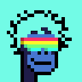 PsychoPunks NFT PsychoPunks什么时候掉线？ 8 月 31 日，星期二，太平洋标准时间上午 10 点。 铸造一个 PsychoPunk 需要多少钱？ 0.03ETH + 天然气。 有多少个心理朋克？ 2,000
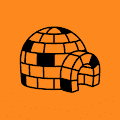 Pudgy Halloween 矮胖万圣节 NFT - 常见问题 (FAQ) ▶ 什么是矮胖万圣节？ Pudgy Halloween 是一个 NFT（非同质代币）系列。存储在区块链上的数字艺术品集合。 ▶ 有多少 Pudgy 万圣节代币？ 总共有
Pudgy Penguins 矮胖企鹅 NFT - 常见问题 (FAQ) ▶ 什么是矮胖企鹅？ Pudgy Penguins 是一个 NFT（不可替代代币）系列。存储在区块链上的数字艺术品集合。 ▶ 有多少矮胖企鹅代币？ 总共有 8,888
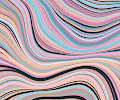 Pukenza Pukenza NFT - 常见问题（FAQ） ▶ 什么是Pukenza？ Pukenza 是一个 NFT（不可替代代币）集合。存储在区块链上的数字艺术品集合。 ▶ 有多少 Pukenza 代币？ 总共有 8,010
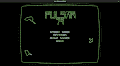 Pulsar79 脉冲星 79 作为 Genesis 项目，Pulsar 79 从 70 年代的第一波电子游戏中汲取灵感。 受基于 Vector 的 Arcade 游戏与程序生成和现代创新相结合的启发，该项目展示了使用生成
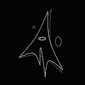 Pulses Of Imagination 让您的想象力随着每一个脉搏而流动。 通过@chromorphs https://chromorphs.xyz/poi 附加信息 每个集合都有自己的智能合约。 生成代币和代币哈希的脚本将可在智能合约中访
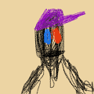 Pumpametti Pumpametti，艺术家 Pumpametti 的创世艺术项目，记录了cryptoniano 文化。在 Pumpametti 内部将有非常罕见的 Aperioni、Zombioni 和 A
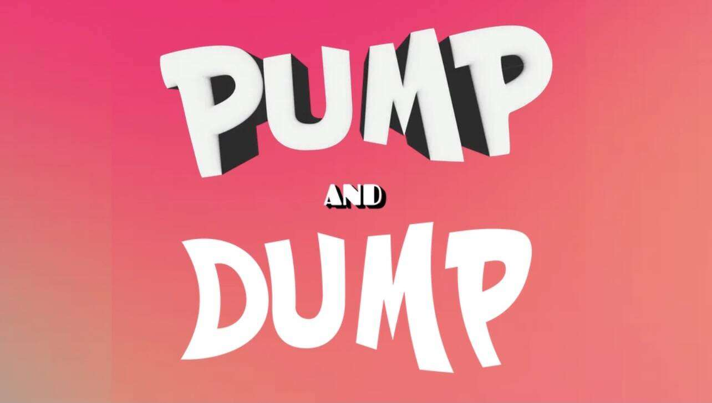 PumpAndDump.io 首先是泵和倾倒。 然后是地毯。 PUMPandDUMP.io NFT - 常见问题（FAQ） ▶ 什么是 PUMPandDUMP.io？ PUMPandDUMP.io 是一个 NFT（非同质代币）集合。 存储在区块链上的
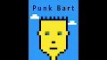 Punk Bart Cowabunga 一个新的社区驱动项目 向 CryptoPunks 和 Bart Simpson 致敬。1024 个独特的 NFT 多边形上的 ERC-1155 令牌。 让我们来征服元宇宙！ 朋克巴特 NFT - 常见问题（FAQ） ▶ 什么是朋克巴特
PUNKS: Origin Stories 在他们聚集在一起让不可替代的粉丝们惊叹之前，朋克们过着自己的生活，直到他们被召唤到 web3 中唯一的地方：起源城！ 跟随 Origin Stories，这是一部纯数
Redacted Remilio Babies Remilio Maker 是男孩的 Milady。 以Ulenka 的 艺术为 特色， “Remilionaire”的领导， Yayo Corporation 的咨询 ，以及Charlotte Fang的实习生
Relic Punks “Relic Punks”是 Metarelics 为您带来的第一个官方 Relic Reserves 收藏，由 Jeff Cole 创作。 朋克是对过去重要文化技术的 36 件作品。该系列使用怀旧来带回我们与消费设备
Relics Pass Relics Pass 由IKONICK& Sneaks of Nature的联合创始人 Jeff Cole 和 Mark Brazil 带给您。Pass 是 IKONICK 的核心 持有 Relics Pass 将授予您一个免费薄荷和一个折扣薄荷到 Sneaks
RELICS Season 1 收集和展示文物。每个 RELIC 都包含来自 Monstercat 电子音乐家名单的独特视觉和完整歌曲。 拥有您最喜欢的艺术家的时刻。 您的遗物将在 Metaverses 中解锁独特的互动。即将与 Ja
remikz secret lab ▶ 什么是 remikz 秘密实验室？ remikz 秘密实验室是一个 NFT（不可替代令牌）集合。存储在区块链上的数字艺术品集合。 ▶ 存在多少 remikz 秘密实验室代币？ 总共有 6 个 remikz
REMIX! Mint Club 混音！专供所有 REMIX 使用的代币！持有人。 混音！代币提供了对 APE DAO 团队和周围一些最具创意的 NFT 艺术家为您带来的最新项目的独家访问权。立即购买，有机会铸
Rengoku Legends [Samurai] Rengoku Legends 是一个完全可定制的武士集合，具有视觉和音乐稀有性、机制和实用性。每个武士都将由每个持有者创建和定制。这个创世纪系列将成为由社区推动的身临


 是 PAVERSE 的实用 NFT。")